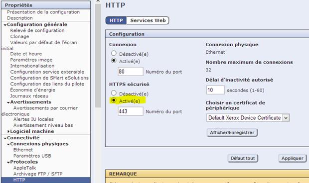
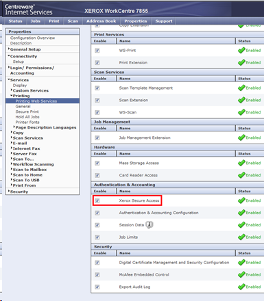
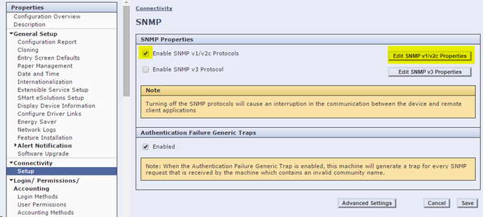
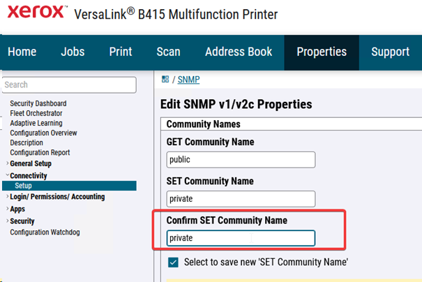
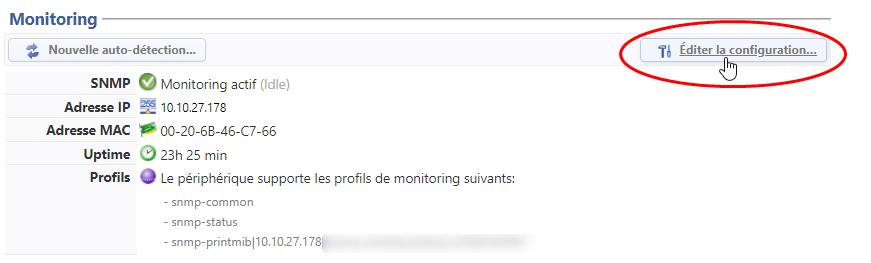
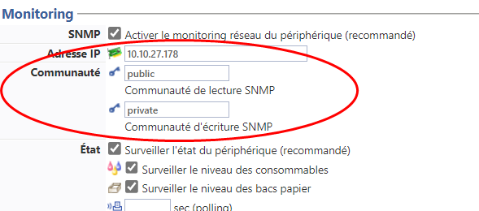
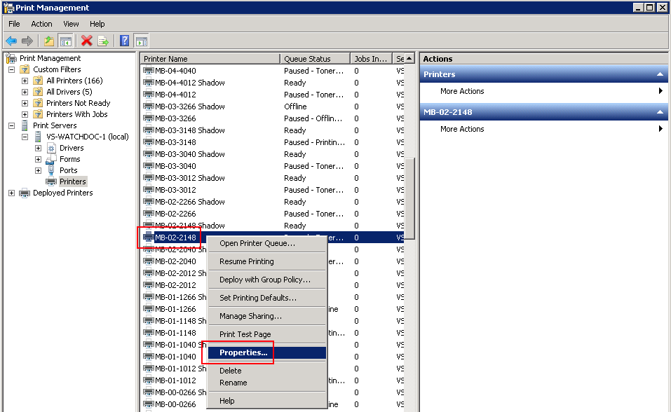
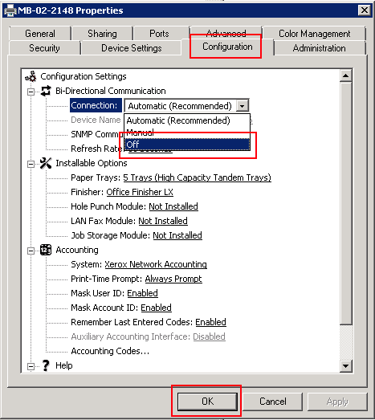
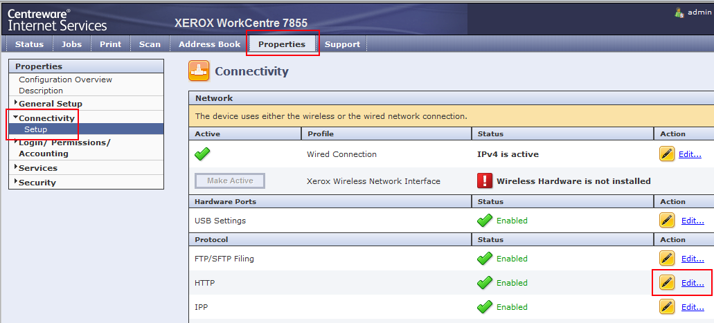
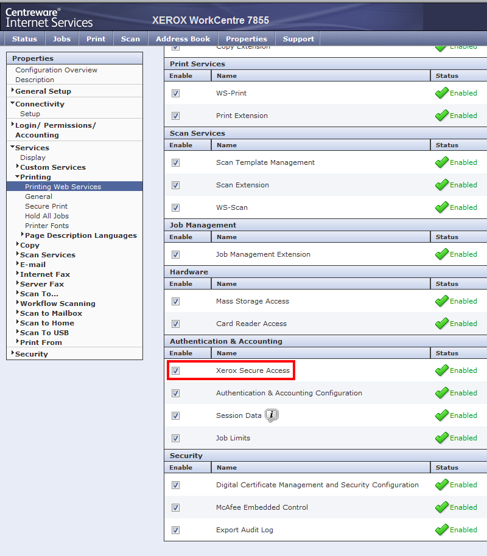

WES Xerox - Configurer les périphériques
Configurer les ports
Les ports réseau à ouvrir pour permettre le fonctionnement des WES sont les suivants :
| Source | Port | Protocole | Cible |
| Service Watchdoc comptabilisation (jba) pour l'authentification, port sécurisée obligatoire |
TCP 80 |
HTTP
|
Périphérique d'impression |
Modèles ColorQube et WorkCenter
Avant d'installer l'interface Watchdoc®, il convient de vérifier les paramètres suivants sur le périphérique :
-
l'existence d'un certificat SSL ;
-
l'activation du protocole HTTPS ;
-
la vérification des communautés SNMP ;
-
la vérification de la bidirectionnalité.
Certificat SSL
-
accédez à l'interface web d'administration du périphérique en tant qu'administrateur ;
-
sous l'onglet Propriétés > Connectivité > Protocoles, cliquez sur HTTP ;
-
dans la section Configuration > HTTPS sécurisé, optez pour Activé(e) ;
-
cliquez sur le bouton Appliquer pour valider la configuration :

→ le site web d'administration redémarre et le navigateur est redirigé vers le site https du périphérique. Il peut être nécessaire d'auto-signer le certificat.
Web service Xerox Secure Acces (XSA)
-
depuis l'interface web d'administration du périphérique, rendez-vous sous l'onglet Propriété >
Service > Impression
-
cliquez sur Services Wes d'impression;
-
dans la section Authentification et Comptabilisation, vérifiez que la case Xerox Secure Access est cochée ;
-
Cliquez sur le bouton Appliquer pour valider le paramétrage :

Communautés SNMP
-
Depuis l'interface web d'administration du périphérique, rendez-vous sous l'onglet Propriété >
Connectivité > Installation ;
-
dans la section Propriétés SNMP, cochez la case Activer le protocole SNMP V1/V2c ;
-
cliquez sur le bouton Editer les propriétés du SNMP v1/v2c :

-
Dans la section Nom de Communauté, vérifiez les paramètres GET Community Name et SET Community Name:

-
Cliquez sur le bouton Enregistrer pour valider le paramétrage.
-
Dans Watchdoc, accédez à la configuration de la file d'impression à laquelle est associée le WES : Menu principal > Files d'impression > Xerox > Propriétés > Section Monitoring > Editer la configuration) :

-
dans la section Communauté, vérifiez que les valeurs saisies pour la Communauté de lecture et la Communauté d'écriture sont identiques à celles du périphérique.
Au besoin, modifiez-les pour qu'elles soient identiques :

Vérifier la bidirectionnalité
Par défaut, le mode "bidirectionnalité" est activé sur le périphérique d'impression.
En conséquence, le mode de comptabilisation du pilote est synchronisé avec celui du périphérique.
Pour que Watchdoc® fonctionne correctement, il est nécessaire de désactiver ce mode sur le pilote et sur le périphérique.
-
pour désactiver la bidirectionnalité sur le pilote, rendez-vous dans le Gestionnaire des périphériques d'impression du serveur :
-
sélectionnez le pilote concerné puis cliquez-droit > Propriétés ;
-
Sous l'onglet Configuration, cliquez sur Configuration Settings > Bi-Directional Communication > ;

-
Pour le paramètre Bi-Directionnal Communcation > Connection, sélectionnez la valeur Off :

Désactiver la bidirectionnalité sur le périphérique :
-
connectez-vous à l'interface d'administration web du périphérique en tant qu'administrateur ;
-
afin de sécuriser les échanges entre le périphérique et Watchdoc®, il convient d'adopter le protocole HTTPS au lieu du protocole HTTP par appliqué par défaut. Pour modifier ce protocole, cliquez sur l'onglet Propriétés, puis Connectivité > Statut ;
-
dans l'interface Connectivité, section Protocole, cliquez sur le bouton Editer du paramètre HTTP :

-
dans l'interface HTTP,
-
pour le paramètre Force Traffic over SSL,
-
sélectionnez Yes et conservez le port 443 par défaut ;
-
cliquez sur Save pour valider :

-
dans la section Propriétés, cliquez sur l'entrée de menu Services > Printing > Printing Web services ;

-
dans la section Authentication & Accounting, cochez Xerox Secure Access,
-
cliquez sur le bouton Save pour valider
-
Déconnectez-vous de l'interface d'administration du périphérique et procédez à la création / configuration du WES.